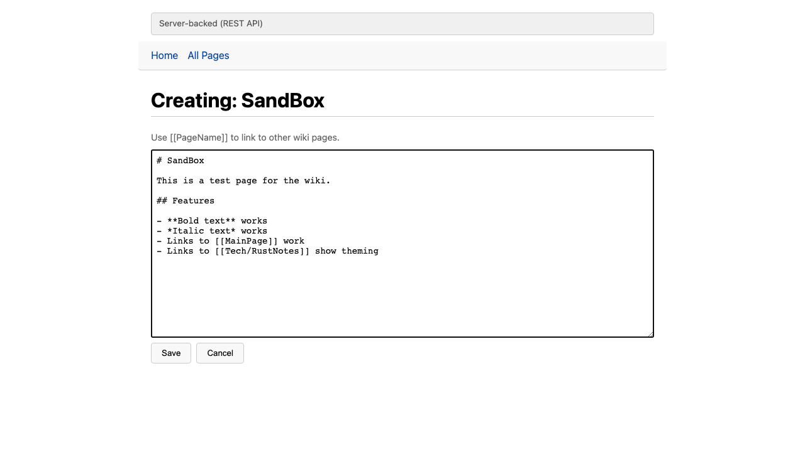
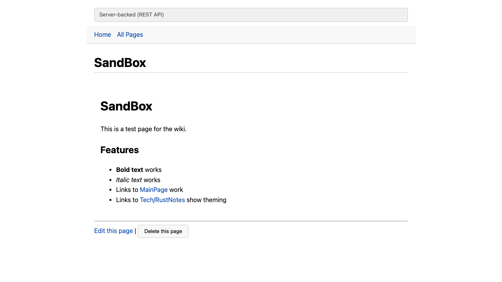
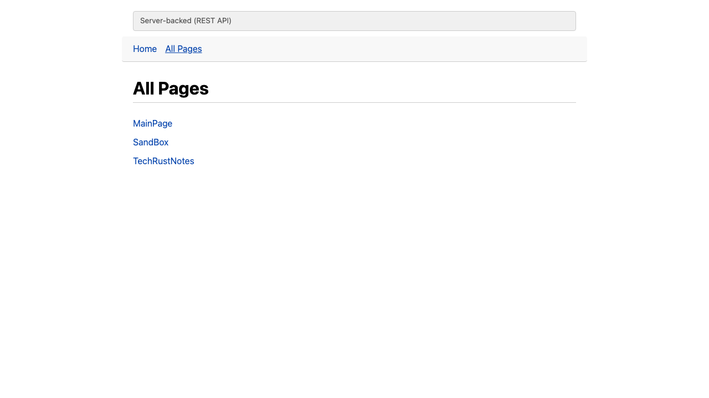
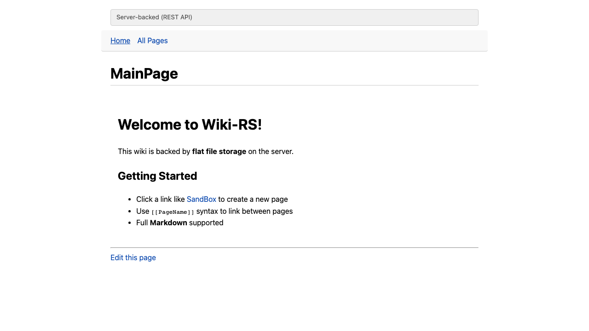

Live Demos
Ephemeral Wiki
LiveIn-memory HashMap storage. Pages exist only during the browser session. Perfect for quick scratchpads.
Try itBrowser Memory Wiki
LiveUses localStorage for persistence. Pages survive page refreshes and browser restarts.
Try itExport/Import File Wiki
LiveDownload your wiki as JSON, upload it later. Portable wiki you can carry as a file.
Try itServer-Backed Variants
These require a running Rust server. Clone the repo and run locally.
Server File Wiki
Local onlyEach page stored as a flat .md file on the server. Simple, inspectable, grep-friendly.
Server SQLite Wiki
Local onlyPages stored in a SQLite database with full timestamp support. Fast queries, single-file DB.
Port 7401Server Git Wiki
Local onlyEvery save creates a git commit. Full version history of every page change, built on libgit2.
Port 7402Features
Markdown Rendering
Headings, bold, italic, lists, code blocks via pulldown-cmark
Wiki Links
[[PageName]] syntax with red links for missing pages
Page Aging
5 visual tiers from Fresh to Ancient based on last edit time
Sub-wiki Theming
CSS custom properties with 5 color themes by page prefix
Import/Conversion
VQWiki and TiddlyWiki markup converters
XSS Protection
Raw HTML filtered, wiki links in backticks not expanded
Screenshots




Running Locally
# Client-side wikis (requires trunk: cargo install trunk)
cd frontend/wiki-ephemeral && trunk serve # port 7408
cd frontend/wiki-browser-memory && trunk serve # port 7409
cd frontend/wiki-export-file && trunk serve # port 7407
# Server-backed wikis (build WASM frontend first)
cd frontend/wiki-server-ui && trunk build
cargo run -p wiki-server -- --backend file --data-dir ./data/file # port 7400
cargo run -p wiki-server -- --backend db --data-dir ./data/db # port 7401
cargo run -p wiki-server -- --backend git --data-dir ./work/git # port 7402